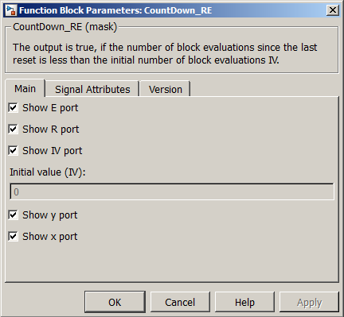
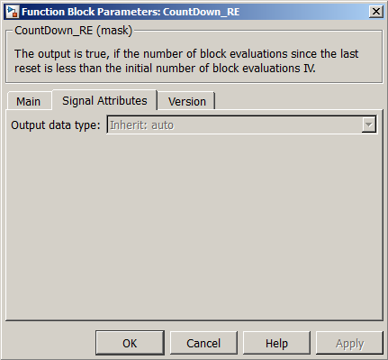

| MBDS Environment |
|
CountDown_RE |
MATLAB Helpdesk |
General
Countdown indicator.
Library
DescriptionMBDS Blockset
Output is true if the number of block evaluations since the last reset is less than the initial number of block evaluations IV.
Using the parameter mask the block can be configured according to the users needs.Via register card Main the block input and output ports can be shown or hidden (see Figure 1).
- Show E port. If checked, the block provides an enable input port. If unchecked, the block cannot be disabled.
- Show R port. If checked, the block provides a reset input port. If unchecked, the block cannot be reset.
- Show IV port. If checked, the block provides an input port for the initial value used when reset the block. If unchecked, the initial value can be configured via a mask parameter.
- Initial value (IV). Here the initial value can be specified if the IV port is hidden.
- Show y port. If checked, the block provides the block state output port.
- Show x port. If checked, the block provides an output port for the internal countdown value.

Figure 1: Parameter Mask Dialog - Register card MainVia the register card Signal Attributes signal related attributes can be configured (see Figure 2).

- Output data type. If the initial value is specified by a mask parameter, e.g. the IV port is hidden, the related data type can be configured here.
Figure 2: Parameter Mask Dialog - Register card Signal Attributes
The register card Version displays the block version information.
Inputs and Outputs
Example
Port I/O Data Type Description E
In
boolean Suppresses the block calculation while false R In boolean Resets the block states to their initial values while true IV In Any integer Initial value set upon reset y Out boolean Timout state, true indicates timeout
x Out Any integer internal countdown value
Refer to the example.